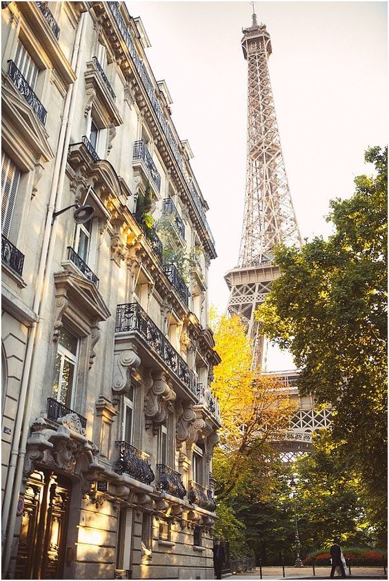
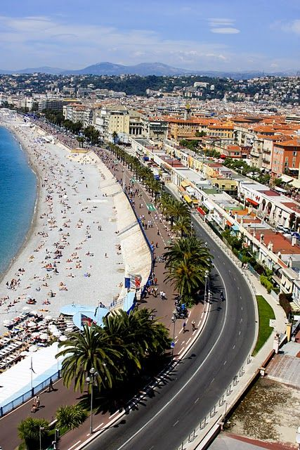

Pariz
Pariz je prestonica i najveći grad Francuske. Nalazi se na sjeveru Francuske na reci Seni. U Parizu se nalazi najposjećeniji muzej na svijetu, Luvr, u kom se može vidjeti čuvena Mona Liza. Značajno je pomenuti Notr Dam katedralu, Ajfelov toranj i Trijumfalnu kapiju.
Nica
Nica se dijeli na: stari dio grada, Simez i novi dio grada. Stari dio se karakteriše relativno uskim i krivudavim ulicama i visokim kućama sagrađenim od kamena. Novi dio se smestio pored obale i sadrži sve što je potrebno modernom priobalnom gradu.
Sen Trope

Ovo nekadašnje ribarsko selo u 19. vijeku se transformisalo u mjesto u kom su se okupljali umetnici, a od sredine 20. vijeka i bogataši. Zbog toga je Sen Trope i postao sinonim za luksuz i ekskluzivnost.Najljepše plaže sa mekanim pijeskom nalaze se na oko kilometar i po od grada.
Znamenitosti
Na stotu godišnjicu Francuske revolucije, 1889. godine, izgrađena je Ajfelova kula, danas svjetski poznati simbol Pariza i Francuske.
Veliki rad rimske arhitekture, Akvadukt Pont du Gard, izgrađen je oko 19 godina prije nove ere. Niži nivoi Akvadukta-a su korišćeni kao most preko rijeke Gardon. U srednjem vijeku, centralni nivo akvadukta koristili su pešaci i vozila.
Do 19. veka katedrala Notre Dame bila je mesto gde su krunisani mnogi francuski kraljevi. Katedrala je izgrađena na ostrvu Sena u Parizu. Vrlo bogata fasada katedrale svjetski je poznata po svojoj ljepoti i skladu.
Karkason, prelijep srednjevekovni grad, danas je najveći utvrđeni evropski grad. Tvrđava u Karkasonu danas izgleda isto kao i u vrijeme izgradnje u 13. veku. Veći dio grada datira iz srednjeg vijeka, ali mogu se pronaći i druge starije zgrade.
Francuski sir
Poznato je da Francuska ima 365 vrsta sireva, svaki za po jedan dan u godini. Kažu da ih sada već ima i više. Prave se od kravljeg, ovčjeg i kozjeg mleka, i vezuju se za različite oblasti Francuske. Još su Gali uočili da sirevi pomažu kod varenja, pa ih zato Francuzi jedu na kraju obeda. Sirevi se dele na sveže (nefermentisane) i prevrele (fermentisane) sireve, a ovi drugi se dele još i na meke, srednje tvrde, tvrde i topljene sireve. Tipično francusko posluženje je tanjir sireva. On treba da sadrži najmanje pet vrsta sireva, dok ih na bogatijem tanjiru ima 8 ili 12 vrsta. Kada se ređaju, uz ivicu tanjira idu sirevi sa tvrđom korom.
Običaji
Francuzi se skoro uvek odlučuju za napitke čija temperatura je približna sobnoj temperaturi. Zapravo, kada vam u kafiću ili restoranu donesu vodu, možda ćete zateći ili zbuniti konobara ukoliko zatražite led.
Dupli poljubac na oba obraza. Ljubite se sa svima koje sretnete, ali ukoliko poljubite nekoga na žurci kako bi se pozdravili jer idete, a pritom se još malo zadržite, to se može smatrati krajnje nekulturnim.
Žitelji mnogih drugih zemalja, posebno SAD, plaše se da pomažu sugrađanima i strancima iz straha da ih oni mogu iz nekog razloga tužiti ukoliko se prilikom pružanja pomoći povrede. U Parizu, ukoliko vidite osobu sa problemom, smatra se kulturnim i potpuno normalnim da joj pomognete.